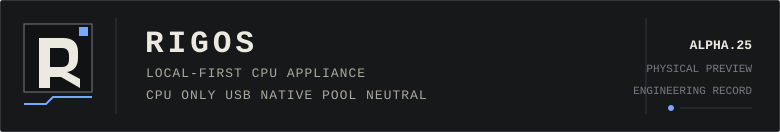

Project record
RIGOS is a Debian-based x86_64 USB compute appliance for automatic, persistent and observable CPU mining. This site records how it works, what failed during physical testing, what Alpha.25 proves and what remains unproven.

- Release
- 0.0.4-alpha.25
- Class
- Functional physical Alpha preview
- Development
- Paused at a frozen milestone
- Production ready
- No
Purpose
RIGOS keeps the local machine in control. It does not require a vendor account, activation server, subscription, worker limit or remote owner before it can perform its job.
The system uses an immutable appliance root, separate durable state, explicit configuration revisions, direct systemd ownership and a small local operator interface.
Operating path
BIOS and UEFI
|
v
immutable Debian root, slots A and B
|
v
verified persistent state
|
v
committed configuration revision
|
v
validated runtime under /run/rigos
|
+--> huge-page authority
+--> network readiness gate
|
v
systemd-owned XMRig
|
v
rig, rigosctl and bounded health observation
Utility and recovery boot remain outside the normal mining path. Recovery mutation is explicit. The rig command does not hide sudo and does not bypass state, configuration or runtime gates.
Contents
- Project history
USB appliance work, persistent state, firstboot defects, Alpha.22 repairs, later hardening and the Alpha.25 milestone.
- Architecture
Boot modes, systemd ordering, state authority, revision activation, runtime generation and operator surfaces.
- Physical evidence
Sanitized real-hardware status, huge-page readiness, accepted shares and the exact limits of the recorded samples.
- Known limits
The missing compatibility, power-cycle, outage and soak campaigns that prevent a stable claim.
Current evidence
| Physically booted | Yes |
|---|---|
| Configured mining observed | Yes |
| Persistent state and exact huge pages observed | Yes |
| Broad hardware compatibility proven | No |
| Long unattended reliability proven | No |
| Stable release declared | No |
Alpha.25 is usable as an experimental appliance. That is narrower than a production-ready claim.